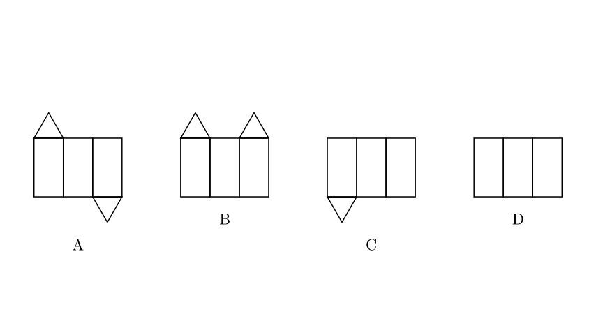
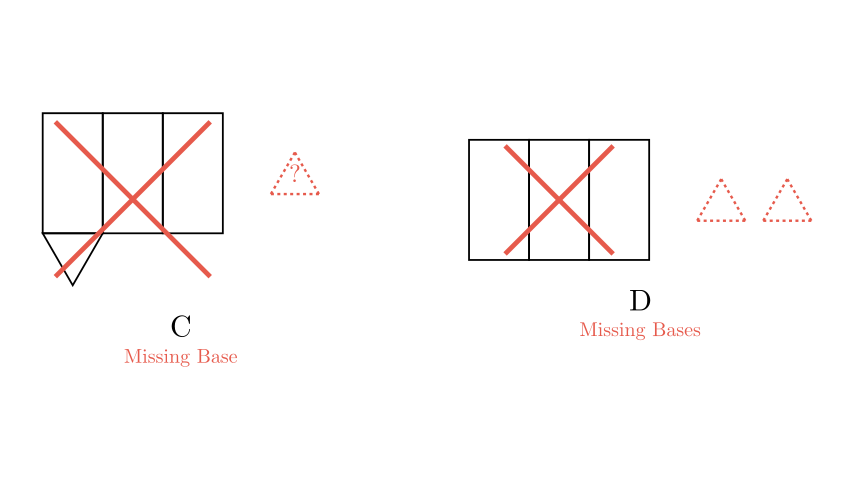
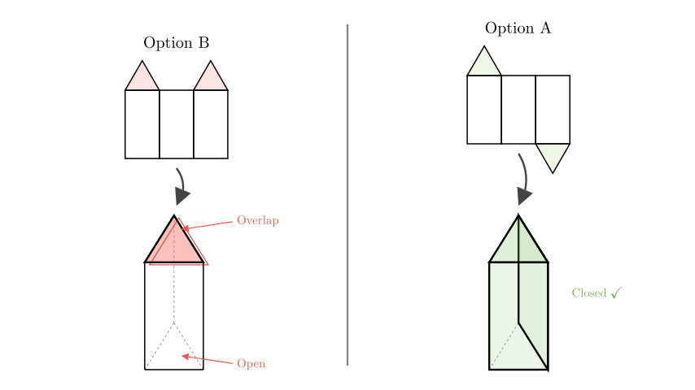

Problem Statement: Which of the following four figures is the surface development (net) of a triangular prism?
A) [Figure A] B) [Figure B] C) [Figure C] D) [Figure D]
Solution Approach: To solve this problem, we need to understand the geometric properties of a triangular prism. A triangular prism consists of: 1. Three rectangular lateral faces (which form the sides of the prism). 2. Two triangular bases (one at the top and one at the bottom).
We will analyze each option to see if it contains the correct number of faces and if they are arranged in a way that allows them to fold into a closed 3D shape.

Step 1: Counting the Faces
First, let's eliminate options based on the number of faces required. A triangular prism must have exactly 5 faces in total: * 3 Rectangles * 2 Triangles
Let's check the options: * Option C: Has 3 rectangles but only 1 triangle. This is missing a base. * Option D: Has 3 rectangles and 0 triangles. This is missing both bases.
Therefore, Options C and D are incorrect. We are left with Options A and B, which both have the correct number of faces (3 rectangles and 2 triangles).

Step 2: Analyzing the Arrangement (Folding Logic)
Now we compare Option A and Option B. The key difference is the position of the triangular bases relative to the rectangular strip.
The Rule: For a prism to close properly, the two bases must be on opposite sides of the lateral surface (the strip of rectangles). One needs to fold over the "top" and the other needs to fold over the "bottom."
Analyzing Option B: Both triangles are on the same side (the top). If we fold the rectangles into a triangular tube, both triangles will try to cover the top opening. This results in overlapping bases at the top and a completely open bottom.
Analyzing Option A: One triangle is on the top, and the other is on the bottom. When the rectangles are folded into a tube, the top triangle folds down to cover the top opening, and the bottom triangle folds up to cover the bottom opening.

Conclusion
Option A is the only figure that has the correct number of faces (3 rectangles, 2 triangles) arranged on opposite sides of the lateral strip, allowing it to fold into a complete triangular prism.
Final Answer: A